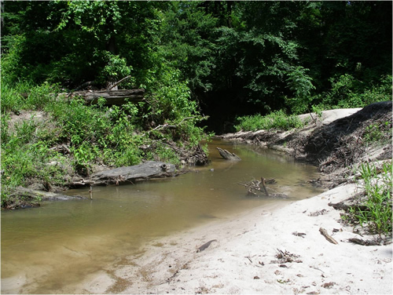

Large Woody Debris
What is it?
Large woody debris incluces whole trees, logs, and rootwads and is an important component in stream ecosystems. Woody debris typically comes from trees that have fallen over or been washed into streams. Wood provides shelter and instream habitat for fish and aquatic organisms, provides organic material into stream food webs, and can help stabilize eroding banks by collecting sediment. Woody debris can also be intentionally added to streams for habitat enhancement and nutrient input.
 ( photo from M. Bean)
Conservation Benefits
- Important source of organic material for streams
- Provides shelter and instream habtiat for fish and aquatic organisms
- Provides surface area for sediment accumulation which can help stabilize eroding banks
What does it include?
Large woody debris that has been naturally deposited should be left in the stream. Technical experts should be consulted to determine if streams need additional woody debris deposits and to determine appropriate amount, size, position, and location within the stream.
Large Woody Debris Links
- Large woody debris (p 151; Center for Watershed Protection)
- Large woody debris in streams (Ohio Department of Natural Resources)
- Reintroduction techniques for instream large woody debris (p 313; Cooperative Research Centre for Catchment Hydrology)
- Re-introduction techniques for instream large woody debris: (Multi-element debris structures) clumped debris
- Streambank habitat enhancement with large woody debris (US Army Corps of Engineers)
- The importance of large woody debris in sandy river systems (Water and Rivers Commission)
Large Woody Debris Bibliography
- Gerhard and Reich. 2000. Restoration of streams with large wood: effects of accumulated and built-in wood on channel morphology, habitat diversity, and aquatic fauna. International Review of Hydrobiology 85: 123-137.
- Laasonen et al. 1998. Recovery of macroinvertebrate communities from stream habitat restoration. Aquatic Conservation: Marine and Freshwater Ecosystems 8: 101-113.